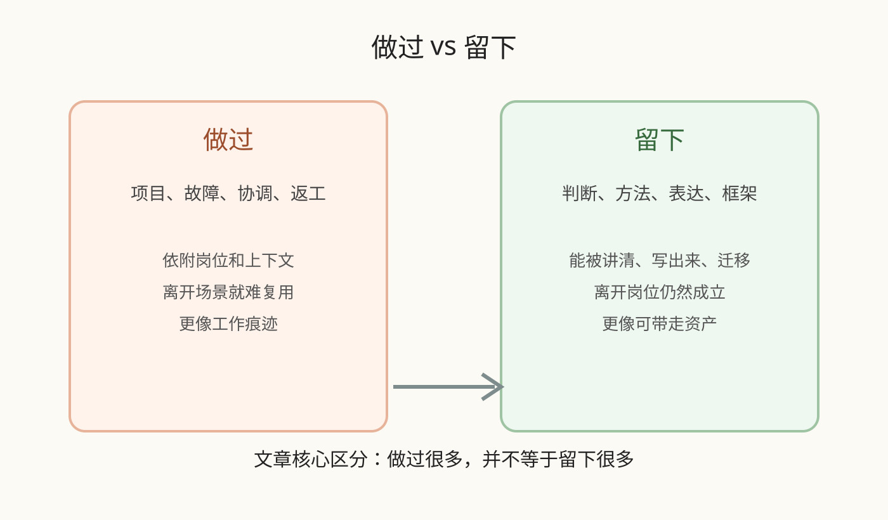
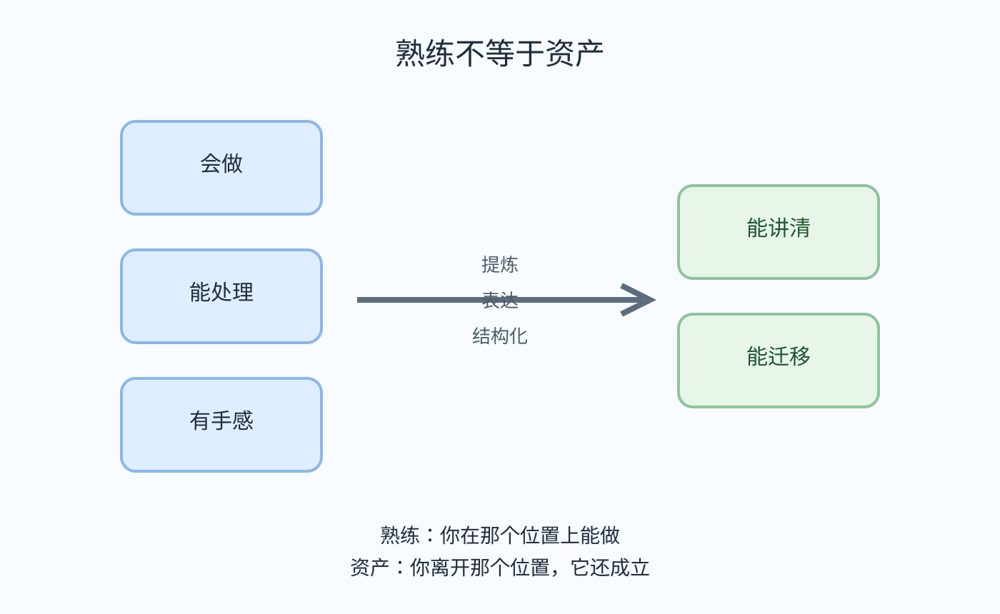

很多人第一次看到“离职同事.skill”这种东西，都会本能地不舒服。
但如果你做过几年技术，你可能会发现，这种不舒服并不只发生在看到新闻的时候。
它更像一种你在工作里早就见过的场景。
一个同事准备离职。
最后一周，大家开始翻他的文档、补他的交接、追着问历史背景。
需求为什么当时那样定？
这个坑为什么之前一直没修？
这个接口为什么这么设计？
这段流程到底卡在哪里？
表面上大家在接工作，实际上大家最想接住的，不只是任务，而是这个人脑子里那套“怎么判断、怎么推进、怎么在一堆模糊信息里把事情做下去”的方式。
可也就是在这种时候，你会突然发现：很多东西是接不走的。
文档能留下，代码能留下，聊天记录能留下，流程和表格也能留下。
但那个同事为什么一看到需求，就知道先补哪块信息；为什么一听会上某句话，就知道真正会出问题的不是表面那个点；为什么同样一件烂摊子，到了他手里推进路径总是更短一点。
这些东西，才是最难交接的。
所以“离职同事.skill”真正让人不舒服的，可能根本不是它像人。
真正更刺的，是它太像“可交接”。
它不像一个活人，它像一份被整理过、被封装过、还能被调用的工作能力集合。像一个人离开之后，原本按理说应该跟着一起消失的东西，居然没有消失。它还在，还能用，还能继续运转。
那一刻，扎人的不是拟人感，而是你突然意识到：原来有些东西，一旦被提炼出来，是可以脱离这个人继续存在的。
问题也就在这里一下子变锋利了：你这些年做过那么多事，究竟哪些只是做过，哪些才算真正留下来的资产？
很多人真正不舒服的，不是被替代，而是被提醒：自己手里其实没留下多少能带走的东西。
这才是这件事更深一层的刺痛。

我们太容易把“做过”误以为“拥有过”。做过项目，处理过故障，扛过上线，带过团队，救过火，协调过无数烂摊子，于是我们默认这些都会自然沉淀成自己的价值。
可问题是，经历不会自动变成资产，重复也不会自动长出复利。
很多人的所谓积累，本质上只是熟练。
熟练的意思是，你在那个位置上能做；资产的意思是，你离开那个位置，它还成立。
这两者中间，隔着的不是努力，而是提炼。
你有没有把那些经验变成判断？有没有把那些判断变成方法？有没有把那些方法变成别人能理解、能复用、能迁移的东西？有没有把一次次“我知道怎么做”，沉淀成“我能讲清为什么这样做”？
如果没有，那很多年过去后，你拥有的可能只是大量模糊的体感，和一种只能依附在具体岗位上的熟悉感。
这也是为什么很多人工作多年以后，会进入一种说不出的慌张。
事做了不少，苦吃了不少，问题也解决了不少。平时在岗位上看起来很稳，换需求能接，出故障能顶，老板问下来也能答，团队里谁都知道你很能扛。
可一旦让你停下来，认真把自己这些年的积累摊开看，你会发现很多东西根本拿不出来。
让你系统讲，你讲不清。
让你写下来，你写不出。
让你交给别人，你交不动。
让你带去另一个场景继续成立，你也未必做得到。
更扎心的是，很多技术人每天做的，恰恰就是最容易被误当成“积累”的那类事。
需求没讲清，你去补。
边界没对齐，你来接。
跨团队掉链子，你去解释。
方案本来很模糊，你负责把它讲清楚。
出了问题，别人先看表面，你得先判断真正会卡死的点。
会开完了，大家都点头，最后还是跑偏，你又得回来补那个没人说透的缺口。
这些当然都很有价值。但如果这些价值最后只停留在“你很会处理”“你很靠谱”“这个事你最熟”，它们就还是长在岗位里，不是长在你自己手里。
这时候人才会意识到，原来自己积累下来的，很多只是“跟着自己在那个位置上运转过”，并不是“已经变成自己真正拥有的资产”。
做过很多，并不等于留下很多。经历如果不能脱离场景成立，最后就只是消耗，不是积累。

这也是“离职同事.skill”最狠的地方。它不是在告诉你“AI很厉害”。它真正照出来的，是一个组织并不只是在替换执行者，它正在加速把很多原本依附于人的经验，抽成结构，抽成接口，抽成可调用的能力模块。
过去我们总觉得，一个人最值钱的，是他在现场，是他有经验，是他反应快，是他熟悉上下文。
现在问题变了。现在真正值钱的，不再只是“你会做”，而是“你能不能把你为什么会做、你如何判断、你怎么处理边界、你怎样复盘和提炼，沉淀成可迁移的东西”。
同样做了很多年技术，有的人一离开原岗位，价值就迅速缩水。因为他所有能力都长在具体流程里，离开了熟悉的人、熟悉的链路、熟悉的上下文，整个人就开始失重。
但也有一些人，离开岗位之后，反而越走越稳。因为他留下来的，不只是项目履历，而是方法；不只是处理经验，而是判断框架；不只是干过什么，而是已经把干过的事提炼成了表达、内容、模型、边界感和做事结构。
前者的价值，留在身体里。后者的价值，留成了资产。
差别看起来像能力高低，实际上是有没有完成那一步最难的转换：从做过，到留下。
所以我越来越觉得，“离职同事.skill”真正让人不舒服的，不是工具越来越像人。而是它逼你承认：经历不等于资产，做过不等于留下。
它逼你重新盘点自己。盘点那些你以为早已属于你的东西，到底是暂时寄存在岗位上的熟练，还是已经内化成判断、方法、表达和结构的长期价值。
一个人真正稳的价值，不是他做过多少事，而是他有没有把这些事，慢慢提炼成离开原岗位也还能继续成立的东西。
所以比起问“AI 会不会替代我”，也许更值得问的是：我这些年，到底留下了什么？